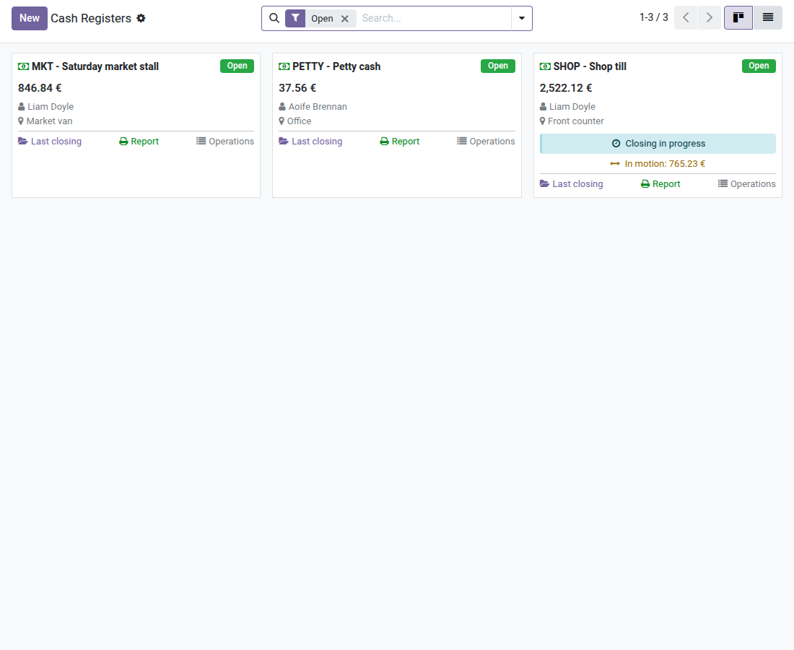
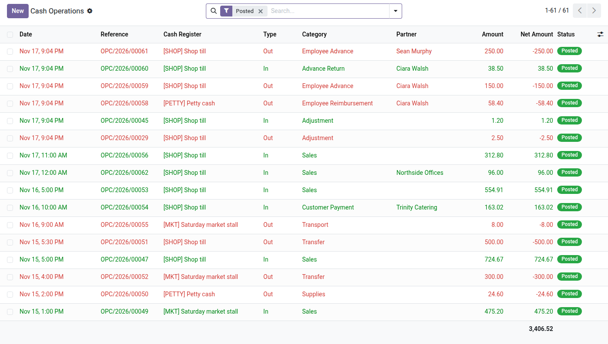
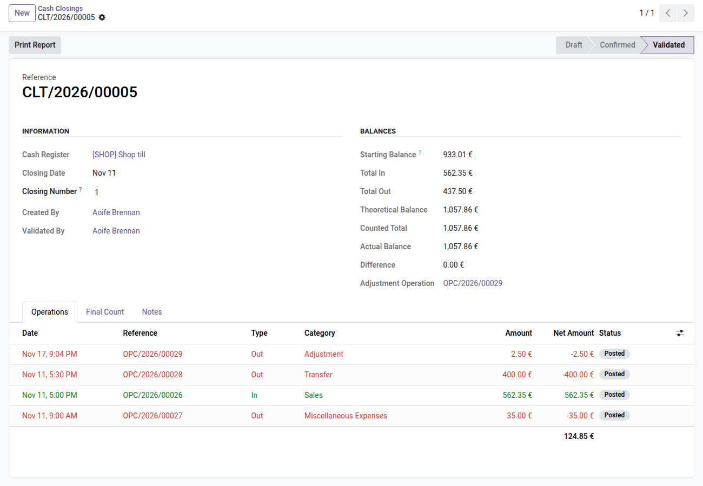
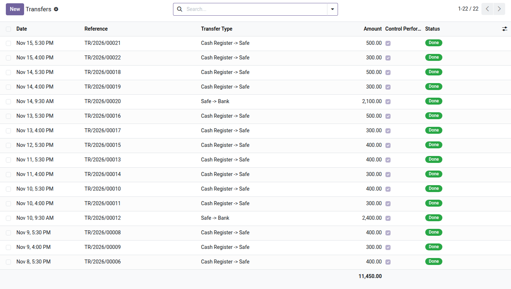
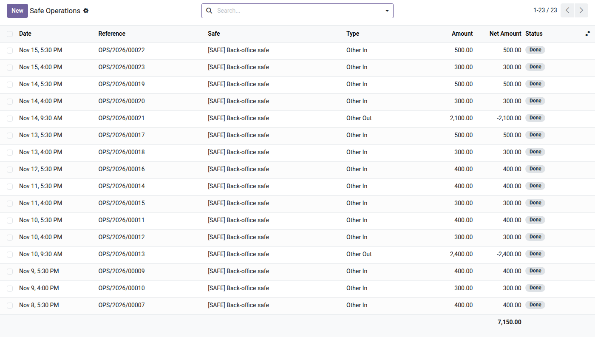
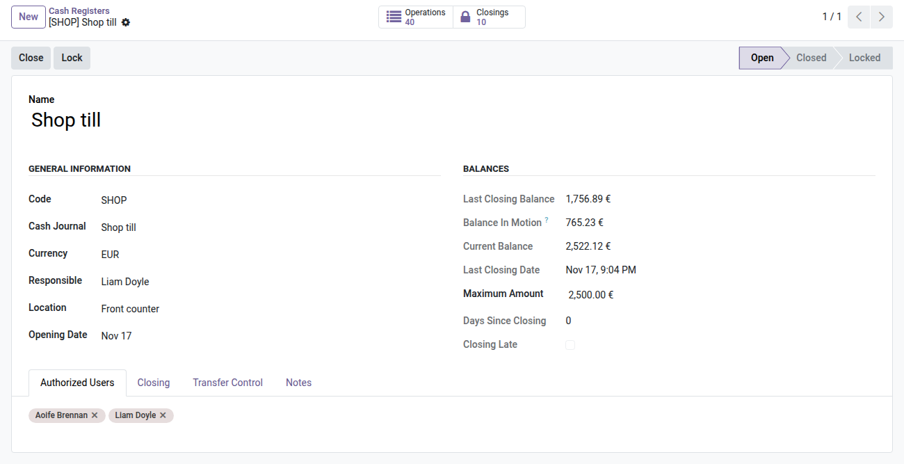

Treasury — Cash Registers & Safes
Every euro coming into or out of your cash registers is tracked, closed and justified — no Excel, no notebook.
The cash register is accounting's blind spot: cash payments are recorded
in Odoo, but nobody knows how much is really in the drawer, who made
the last withdrawal, or why €20 is missing at the end of the week. Checks are done
in a notebook or a spreadsheet — never reconciled, never locked.
What it brings
- 💶 Cash registers with real-time balance — every Odoo payment recorded on a cash journal automatically creates the mirror cash operation.
- 🔗 Chained closings — each closing starts from the validated balance of the previous one: difference displayed, locked once validated, signable PDF report.
- 🔒 Safes — designated custodians, their own operation history, a balance kept separate from the cash registers.
- 🔁 Controlled transfers — register ↔ register, register ↔ safe, with before/after balance simulation and a 3-level control (block, warning, free).
- 🧾 Configurable operation categories — sales, expenses, transfers… each linked to its journal entry.
- 👥 Authorized users per register — a cashier sees only their own registers; menus are hidden from other users.
In pictures
1. Every cash register at a glance
Balance, cashier, location and closing status of the shop till, the market stall and the petty cash.

2. Money in, money out
Sales, purchases, transfers and employee payments, in green and red, with a net total that adds up.

3. Daily closing, counted and signed off
Starting balance, money in and out, counted cash and the difference — booked as an adjustment and validated by the manager.

4. Cash moves under control
Till to safe, safe to bank: each transfer records the balances before and after.

5. The safe has its own ledger
Evening deposits in, bank deposits out — every movement of the safe is numbered and dated.

6. Limits and responsibilities
Maximum amount, blocking or warning control, closing deadline and authorised users per register.

Why adopt it
- Physical cash management does not exist in standard Odoo — not even in Enterprise. This module provides it, for free.
- No more differences discovered weeks later: the chained closing shows them the same day.
- A payment linked to a validated closing can no longer be cancelled or reset to draft — the cash history is reliable.
Core of the OdooSkills Treasury suite
Extend it with Banks (manual accounts + reconciliation), Cash Count (bills & coins), Cash Expenses (employee advances), Dashboard and Closing+. Full pack at a reduced price on apps.odooskills.com.
LGPL-3 license — compatible with Odoo 20.0 Community & Enterprise. Support : apps@odooskills.com.